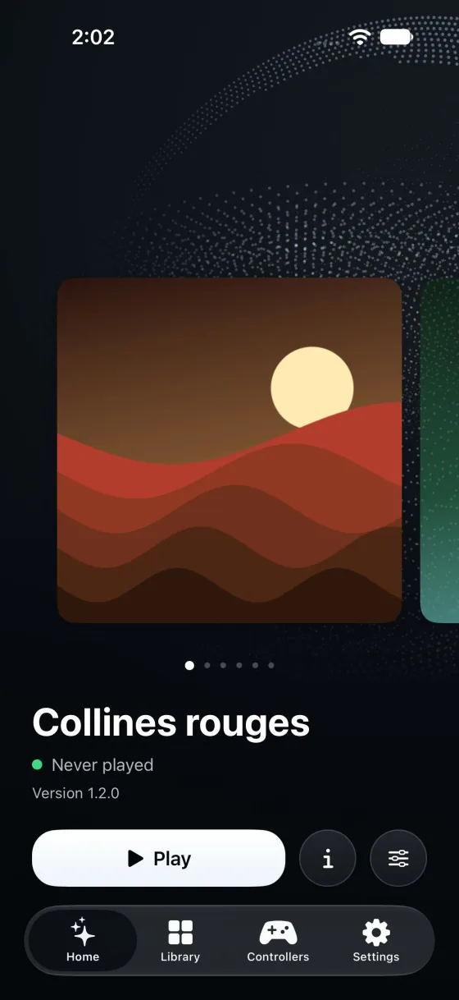

Install without a computer (iOS 27 or later)
- 1
Read first
SideInstaller and AltLoad have you run a command that downloads a program, then type your Apple password. Use a secondary account, and only their official sites.
Another project’s documentation, not tried : Where this comes from
Picture to come
The official page, address visible.
- 2
Install the free apps
SideInstaller asks for LocalDevVPN and Open Minis; AltLoad adds rootshell. They are on the App Store. You also need Wi-Fi and Developer Mode.
Another project’s documentation, not tried : Where this comes from
Picture to come
The apps on the Home Screen.
- 3
With SideInstaller
Follow its install page. Then choose Custom .ipa and give it the Oort NX file, or SideStore first.
Another project’s documentation, not tried : Where this comes from
Picture to come
SideInstaller, Custom .ipa choice.
- 4
Or with AltLoad
Follow Apple ID Install, not Direct Install: that one uses a shared certificate and a DNS profile, and may stop without notice.
Another project’s documentation, not tried : Where this comes from
Picture to come
AltLoad, steps ticked.
- 5
iOS 26
It needs a pairing file made once on a computer: use the iloader guide instead.
Another project’s documentation, not tried : Where this comes from


What has been tried
Never tried by us. The steps come from the official pages, read on 25 November 2026.